Blackpool Tower is one of the most famous landmarks in the UK. It was built in 1894 and is inspired by the Eiffel Tower in Paris. Visitors can go to the top for amazing views of the town and the sea. Inside the tower, there is a ballroom, a circus, and other attractions. It is a must-see place when visiting Blackpool.
Gallery of Blackpool Tower Photographs
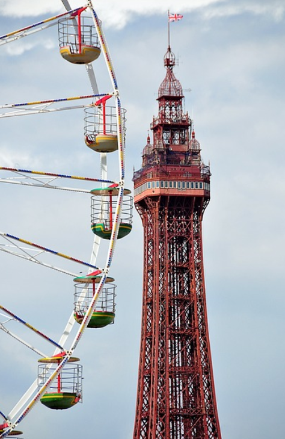
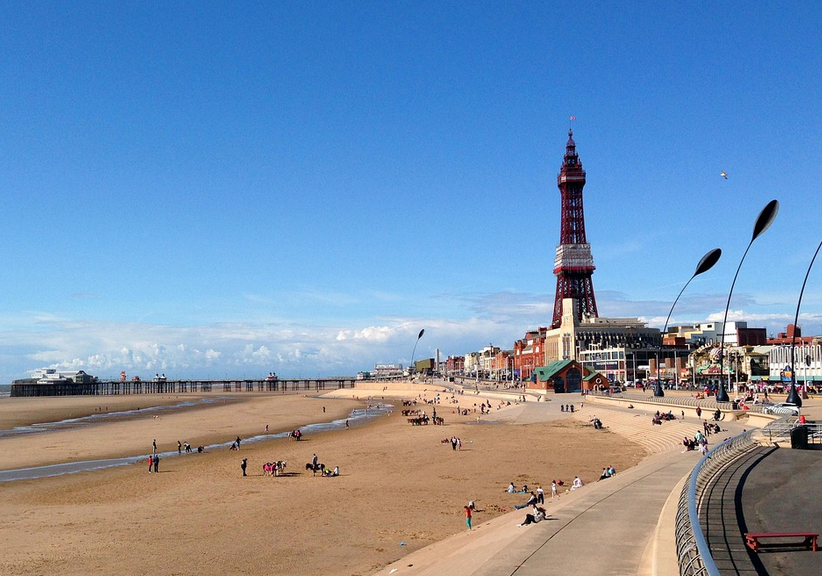
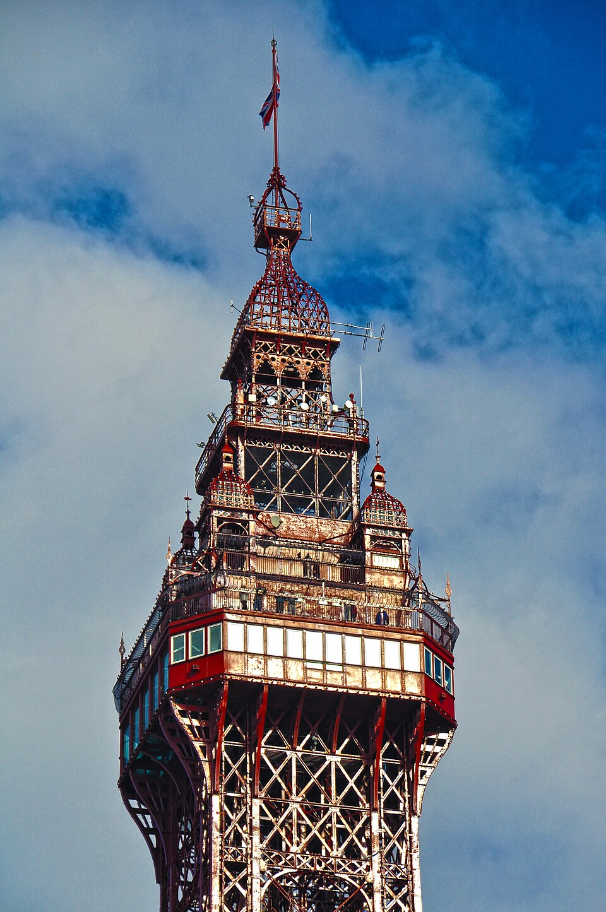
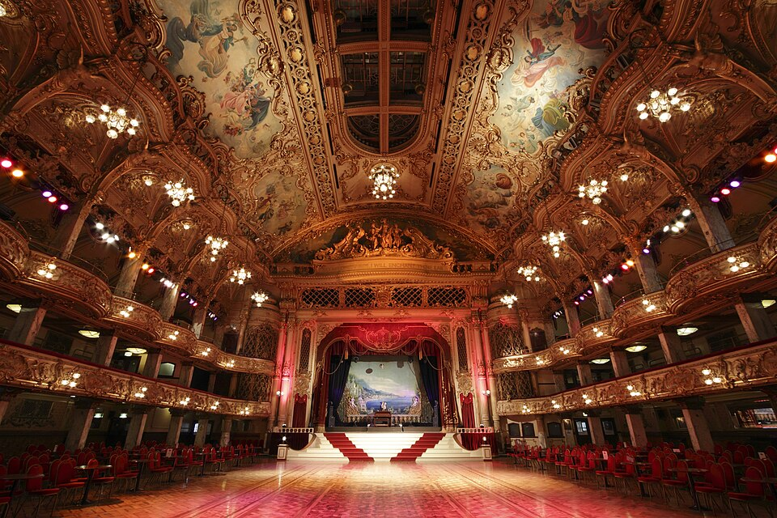
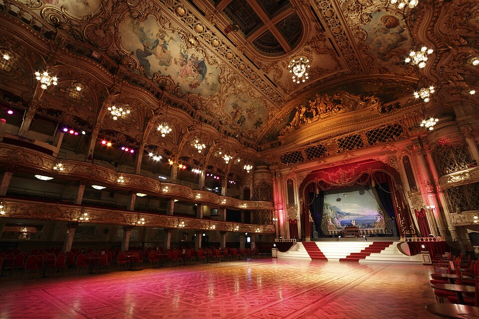
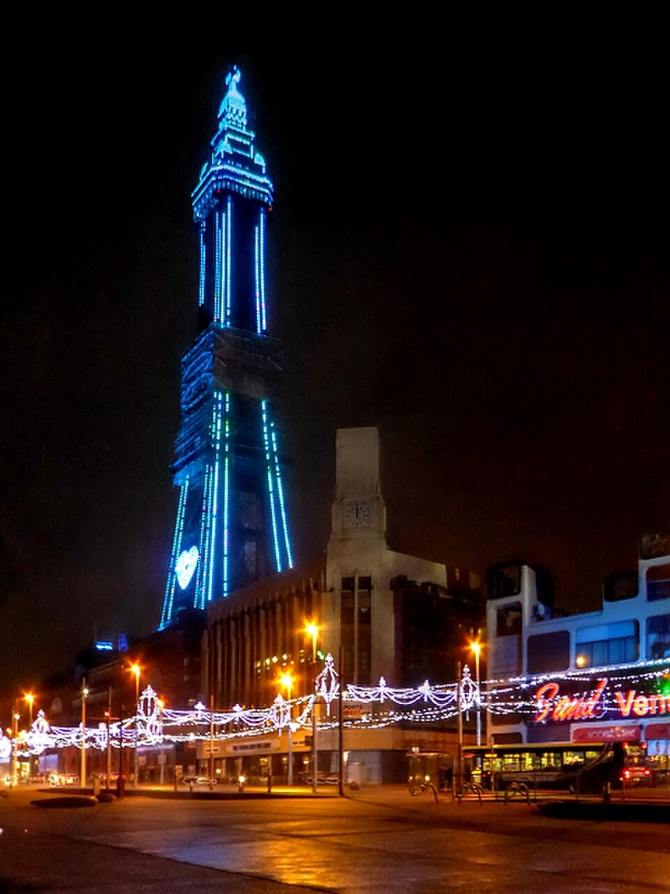
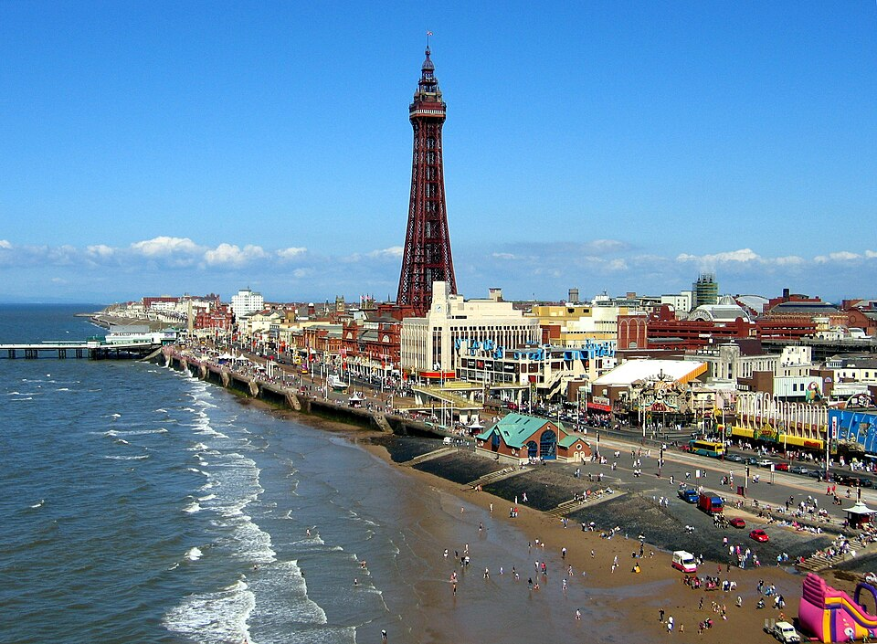
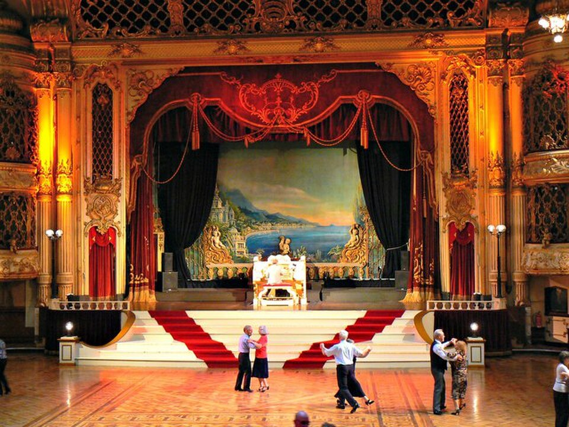

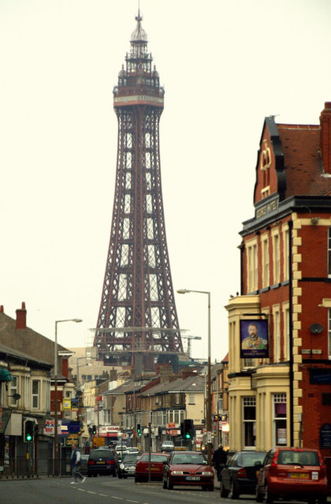
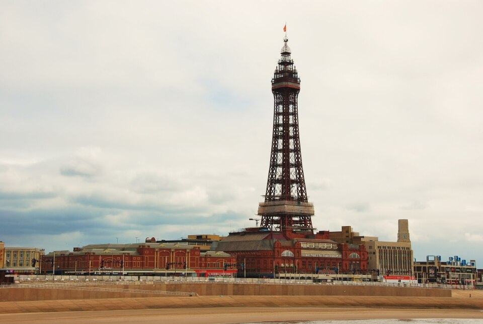
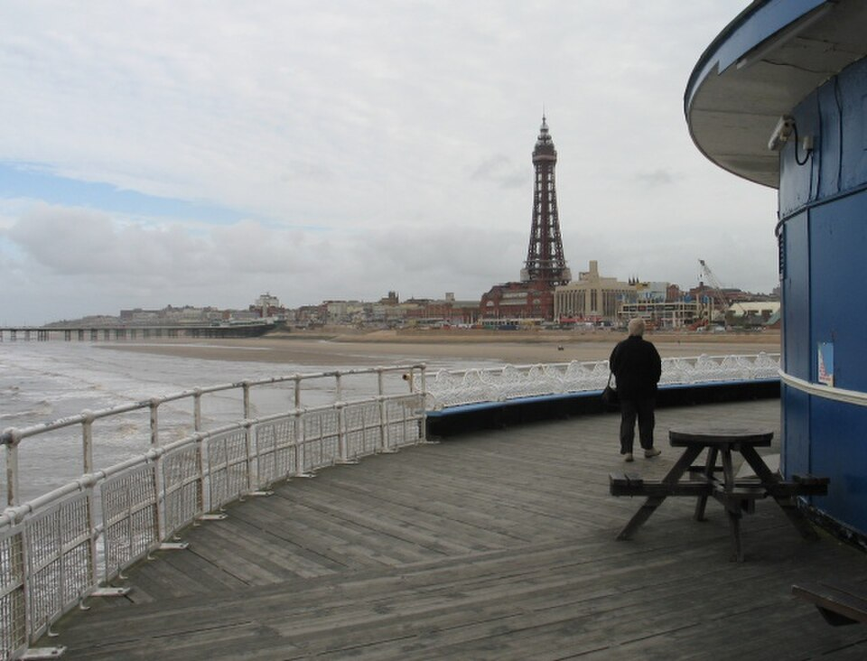
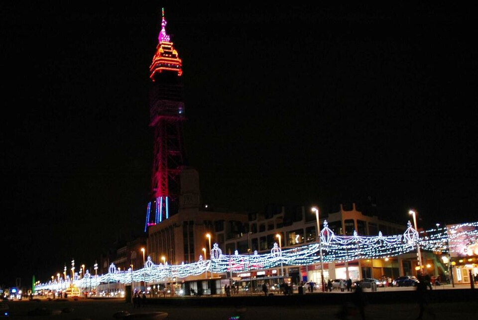
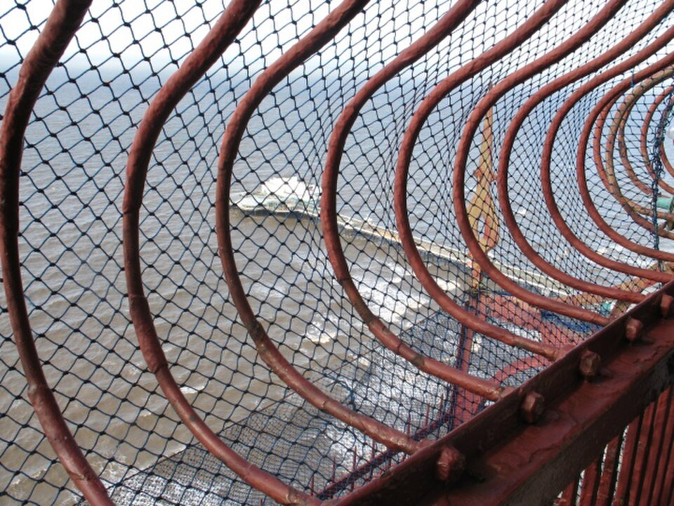